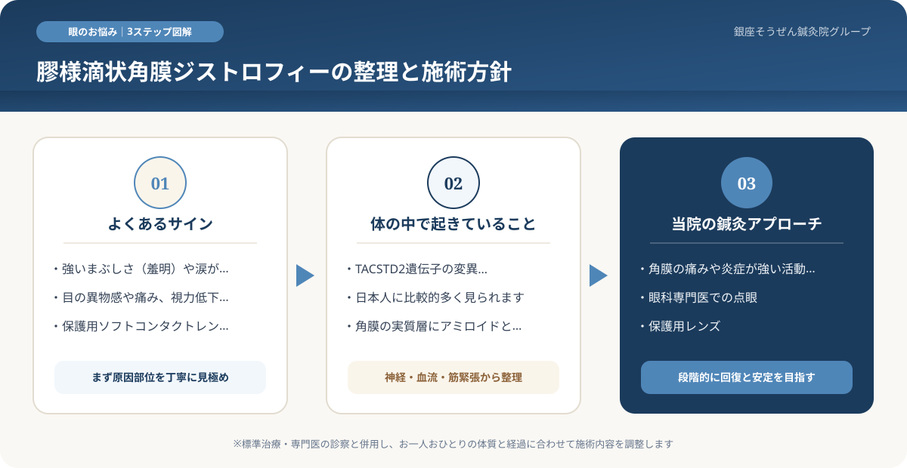

膠様滴状角膜ジストロフィーの鍼灸
角膜にアミロイドが沈着し強いまぶしさや異物感が生じる指定難病です。眼科治療最優先で安定期の疲労や首肩こりを支えます。
まず知っておきたい要点と改善の流れ

TACSTD2遺伝子の変異（常染色体劣性遺伝）によって発症する指定難病で、日本人に比較的多く見られます。角膜の実質層にアミロイドという物質が沈着し、乳白色〜黄色の隆起や濁りが進行することで、強い羞明、異物感、流涙、眼痛、視力低下を引き起こします。治療は角膜表面の隆起切除や角膜移植、保護用ソフトコンタクトレンズ、人工涙液・抗炎症点眼、遮光眼鏡が中心です。
このようなお悩みはありませんか？
- ✓強いまぶしさ（羞明）や涙が止まりにくい症状がある
- ✓目の異物感や痛み、視力低下に悩んでいる
- ✓保護用ソフトコンタクトレンズや点眼・手術で管理している
- ✓強いまぶしさによる眉間や首肩の緊張を和らげたい
当院の施術アプローチ・改善の流れ
なぜ鍼灸で改善へ向かうのか？（作用機序の図解）
膠様滴状角膜ジストロフィーに対する鍼灸は、後頸部〜眼周囲の微小循環と毛様体筋・自律神経調整機序を通じて、お体本来の回復力を引き出します。

眼球周囲の危険な深刺しを避け、風池・天柱・合谷・太衝など安全な経穴へ繊細に施術します。
PC・スマホ作業や緊張で固まった首深層筋と眼輪筋周囲の血流を促し、重だるさを軽減します。
交感神経優位による目の乾き・ピント調節疲労を鎮め、涙液分泌とリラックス反応を助けます。
眼科の点眼・定期検査を最優先としつつ、日々の眼精疲労や頭痛・肩こりの連鎖を整えます。
院長YouTube解説・関連動画
膠様滴状角膜ジストロフィーの症状は羞明や異物感、視力低下など
膠様滴状角膜ジストロフィーの症状は、羞明や流涙、異物感、視力の低下です。
初めに異物感や羞明感、流涙などを強く自覚し始めます。角膜の真ん中に透明なアミロイドの小さな隆起が現れることもあります。
ほとんどの場合は症状は両眼に現れます。多くの場合は、自覚症状が現れた後、角膜中央部を中心に乳白色から少し黄色のような色をした隆起物が現れます。そして視力障害が起こります。
膠様滴状角膜ジストロフィーは進行性の病気です。そのため、アミロイドの沈着の数は少しずつ増えて大きさも大きくなっていきます。
角膜の周辺に広がっていき最終的には角膜全体が濁って視力がどんどん下がっていきます。この時には眼の痛みや見た目の問題も起こります。
症状は、場合によっては左右差があることもあります。
膠様滴状角膜ジストロフィー（GDLD）は、角膜に特異的な遺伝的な病気であり、特有の症状を持つことで知られています。症状の進行は個人差があり、初期症状から重症化するまでのスパンは広い。
1. 角膜の変性:角膜は眼の透明な前面部分であり、GDLDではこの部分に異常が見られます。最も目立つ特徴として、乳白色から黄色の膠様の滴状の沈着物が角膜に現れます。これは、この病気の名前の由来ともなっています。
2. 視力の低下:角膜の透明性が失われることで、光の屈折が妨げられ、視力が低下することがあります。初期の段階では、視力の低下はわずかかもしれませんが、疾患が進行すると、重度の視力低下や失明を引き起こす可能性も考えられます。
3. 光感受性:角膜の異常により、光を感じやすくなることが報告されています。これは、日常生活や外出時に不快感を伴うことが多い。
4. 疼痛や炎症:角膜の変性や沈着物の形成に伴い、炎症や疼痛を感じることがあります。特に、疾患が進行すると、疼痛はより強くなり、日常生活に支障を来たすことがある。
5. 涙の過剰分泌:角膜の刺激や炎症の結果として、涙の過剰分泌が見られることがあります。これは、目の不快感や疼痛に対する体の反応として起こる可能性があります。
6. 視野の変動:病気の進行に伴い、視野の変動や歪みを経験する場合もあります。これは、角膜の変性や沈着物が視野に影を投げかけることが原因となります。
7. 硬結:長期的な病気の進行により、角膜の硬結が起こることが報告されています。これは、角膜組織の変性や沈着物の影響で、角膜が硬くなる現象を指します。
膠様滴状角膜ジストロフィー（GDLD）は、角膜の変性を主とする病気であり、乳白色から黄色の膠様の滴状の沈着物の形成、視力の低下、光感受性、疼痛や炎症、涙の過剰分泌などの症状が特徴的です。
膠様滴状角膜ジストロフィーの改善方法は手術です。
初めの段階の場合、手術で角膜にある隆起物を取り除き改善を行います。病気が進み角膜の濁りが原因で羞明や視力の低下が起こっている場合は角膜移植を行います。
膠様滴状角膜ジストロフィーの原因は遺伝子の異常です。そのため、手術で改善を行っても再び発症することがほとんどで、手術を何度も行うことが必要になります。
改善のためにソフトコンタクトレンズを使うことで病気の進むスピードを遅くしたり再発を遅くしたりする効果が期待できることもあります。
膠様滴状角膜ジストロフィーは、角膜の遺伝的な病気であり、現在のところ根本的な改善方法は存在しません。
1. 保存的な改善方法:
初期段階や軽度の症状に対しては、保存的な改善が試みられることが多い。
人工涙液: 乾燥や刺激を和らげるために、人工涙液の点眼が行われることがあります。
抗炎症薬: 疼痛や炎症の症状がある場合、抗炎症薬やステロイド点眼液が処方されることがあります。
コンタクトレンズ: 症状の緩和や角膜の保護を目的として、特別なコンタクトレンズが使用されることがある。
2. 外科的な改善方法:
病気の進行や症状の重度が進行した場合、外科的な改善が適応となることがあります。
角膜移植: GDLDの進行による視力低下の主な原因は、角膜の変性や沈着物によるものです。このため、最も効果的な改善法として角膜移植が考えられます。角膜移植には、ペネトレーティングケラトプラスティ（全層角膜移植）やランベル角膜移植などの方法があります。
レーザー: 初期段階や中等度の症状に対して、レーザーを使用して角膜の表面を再成形する手術が行われることがあります。これにより、視力の向上や症状の緩和を期待することができる。
3. 未来の改善法:
遺伝子の改善: GDLDの原因となるTACSTD2遺伝子の変異を対象とした遺伝子の改善が研究段階にあります。成功すれば、病気の進行を抑制するか、逆転させる可能性がある。
薬: 角膜の変性や沈着物の形成を抑制する新しい薬が研究されています。これらの薬により、病気の進行を遅らせることが期待されている。
膠様滴状角膜ジストロフィーの改善法は、症状の重度や進行に応じて変わります。
膠様滴状角膜ジストロフィー（GDLD）は、角膜の前部に特有の変性や沈着物が見られる先天性の角膜の病気です。改善は症状の重症度や生活の質に関わる要因に基づいて決定されます。
・人工涙液
適応: GDLDによって引き起こされる目の不快感や乾燥を軽減するため。
種類: ヒアルロン酸、カルボキシメチルセルロース、ポリビニルアルコールなどの成分を含む液体。
効果: 人工涙液は目の表面を潤滑させ、不快感や乾燥からの保護を提供します。
・抗炎症薬
適応: GDLDの進行に伴う角膜の炎症や痛みを軽減するため。
種類: 一般的には非ステロイド性抗炎症薬（NSAID）やステロイド点眼液が用いられる。
効果: 炎症の抑制、痛みの緩和。
・角膜表面の保護薬
適応: GDLDでの角膜の変性部位を保護し、さらなるダメージを防ぐため。
種類: ヒアルロン酸、ヒドロキシプロピルメチルセルロースなどの成分を含む液体。
効果: 角膜表面の保護や修復を促進し、不快感を軽減します。
現在のところ、GDLDの進行を止めるか逆転させる薬は確立されていません。上記の薬は症状の管理や一時的な緩和を目的として使用されます。
膠様滴状角膜ジストロフィーの症状には羞明があります。
生活の中で困る場合には、遮光眼鏡を使うことで羞明の症状が抑えることができ、日常生活が過ごしやすくなることもあります。
ドライアイ・眼精疲労・まぶたのツボ図解
実際の施術ではお一人おひとりの体質・症状に合わせて選穴しますが、ドライアイ・眼精疲労・VDT症候群・眼瞼下垂/けいれんのケアの臨床でよく用いられる代表的なツボの目安です。

📌 代表的なツボの詳細一覧表を開く（6穴） ▼
| ツボ名 | 位置の目安 | 主な狙い | セルフケアの注意点 |
|---|---|---|---|
| 攅竹（さんちく） | 眉頭の内側のくぼみ | まぶたの重だるさ・涙液分泌の副交感神経サポート | 眼球を押さず眉骨の縁に向かって優しく押します。 |
| 魚腰（ぎょよう） | 眉毛のちょうど真ん中、黒目の真上 | 眼瞼下垂・眼瞼けいれん・まぶたの疲労緩和 | 目を閉じて軽く3秒ほど当てて離します。 |
| 絲竹空（しちくくう） | 眉尻の外側のくぼみ | 目の奥の痛み・側頭部の張り・かすみ目ケア | コンタクトレンズは外した状態でケアすると安全です。 |
| 太陽（たいよう） | こめかみのくぼみ | デスクワーク後の目の疲れ・こめかみ痛の緩和 | 蒸しタオルで目元を温めたあとに行うと効果的です。 |
| 四白（しはく） | 黒目の真下、頬骨の小さなくぼみ | 下まぶたのけいれん・眼窩下部の循環改善 | 皮膚を強くこすらず垂直に軽く触れます。 |
| 合谷（ごうこく） | 手の甲、親指と人差し指の間 | 頭顔面・目の緊張を和らげる全身調整穴 | 仕事中の合間にも手軽に押せるツボです。 |
国際査読論文の科学的エビデンス
国際的な医学データベース（PubMed・Cochrane等）で報告されているドライアイ・眼精疲労・VDT症候群・眼瞼下垂/けいれんのケア領域の代表的な査読済み鍼灸研究をまとめています（標準治療との併用や研究上の限界を含めて正確に掲載）。
📚 査読論文データ・PubMed出典リンクを開く（4件） ▼
| 年・研究デザイン | 対象・規模 | 主な結果 | 限界・出典 |
|---|---|---|---|
| 2024年 メタ解析 | ドライアイ 16試験（n=1,383：人工涙液併用） | BUT（SMD 1.25, P<0.0001）、シルマー試験（SMD 1.55, P<0.0001）、角膜染色・総有効率（OR 4.09）が有意改善。 | 自覚症状OSDIは有意差なし（P=0.15）。人工涙液との併用評価。 Medicine (PMID: 38181299) |
| 2019年 二重盲検RCT | ドライアイ 49名（米国・6か月追跡） | 実鍼群はOSDIスコアが1週〜6か月まで有意改善（6か月p<0.01）、乾燥感・充血も有意軽減。 | 小規模・客観的涙液指標（TBUT等）は有意差なし。 Clin Ophthalmol (PMID: 31114151) |
| 2020年 Cochraneレビュー | 緑内障・高眼圧症 3 RCTs（n=137） | 一時的な眼圧低下の報告はあるが8週時点で差消失、視力は有意差なし。 | 全試験が高バイアス・確実性非常に低。点眼治療の代替不可。 Cochrane (PMID: 32032457) |
| 2025年 メタ解析 | 変性眼疾患 21研究（緑内障・黄斑変性等） | 総有効率はOR 3.52（p<0.00001）だが、統合視力（p=0.50）・眼圧（p=0.11）に有意差なし。 | 非ランダム化研究含む。眼科標準管理下での補完研究段階。 Complement Ther Med (PMID: 40850524) |
参考文献・出典
- 2024年 メタ解析（ドライアイ 16試験（n=1,383：人工涙液併用））— Medicine (PMID: 38181299)
- 2019年 二重盲検RCT（ドライアイ 49名（米国・6か月追跡））— Clin Ophthalmol (PMID: 31114151)
- 2020年 Cochraneレビュー（緑内障・高眼圧症 3 RCTs（n=137））— Cochrane (PMID: 32032457)
- 2025年 メタ解析（変性眼疾患 21研究（緑内障・黄斑変性等））— Complement Ther Med (PMID: 40850524)
よくある質問（FAQ）
Q. 角膜の濁りや隆起は鍼灸で改善しますか？▼
Q. 目の痛みやまぶしさが強い時期でも受けられますか？▼
あわせて読まれる関連疾患（眼のお悩み）
メラニン色素合成に関わる遺伝子変異による指定難病です。専門医管理と紫外線対策を最優先とし、安定期の眼精疲労等をケアします。
遺伝性に黄斑部の視機能が低下する指定難病の総称です。眼科専門医での管理を最優先に、安定期の眼精疲労や首肩こりをケアします。
難聴・前庭障害・網膜色素変性を合併する指定難病です。専門医での管理とリハビリを最優先に、安定期の心身疲労を支えます。
ミトコンドリアDNA変異により急激な視力低下が生じる指定難病です。眼科治療と禁煙を最優先に安定期の心身ケアを支えます。
特徴的な眼の所見や屈折異常、全身の合併症を伴う指定難病です。専門医での管理とリハビリを最優先に体調ケアを支えます。
視神経低形成とホルモン異常等を伴う指定難病です。専門医の医療管理を最優先とし、主治医許可下の安定期に体調維持を支えます。
CLINICAL RECOVERY CASES
✨ 実際の臨床改善事例・回復経過を見る
銀座本院をはじめ各院での実際の改善事例を症状別に絞り込んでご確認いただけます。
おひとりで悩まず、まずはご相談ください
銀座本院・川口・大宮・横浜・博多・田無の各院でご予約を承っております。